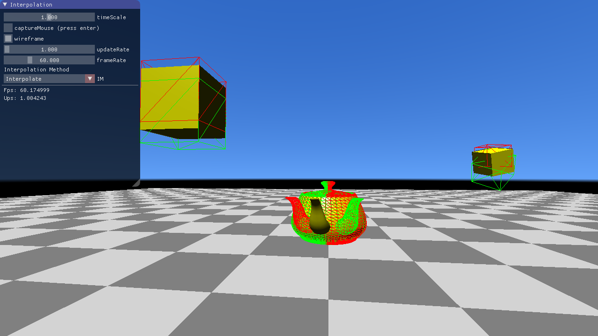

In this task we have a look at a simplified 2D rendering pipeline.
The rendering pipeline is called in RenderingPipeline.Render.
Vertex Shader Stage. In this stage the vertex shader is called for every vertex.
The result is stored in a vertex stream.
Primitive Assembly Stage the primitives are assembled using the result of the Vertex Shader Stage and the IBO (Index Buffer Object).
You have to implement the assembly stage (RenderingPipeline.PrimitiveAssemblyStage)! Follow the comments in the source code.
Face Culling Stage. You have to implement the primitive culling in RenderingPipeline.LineCulling!
Clipping Stage.
The Clipping Stage implements Alpha Clipping in Homogeneous Coordinates and clips each primitive against the view volume.
Rasterization.
The rasterizer dehomogenizes the projected vertex positions, applies the viewport transformation, maps depth to $[0,1]$, interpolates attributes and emits fragments that are covered by the primitive.
Fragment Shader Stage, where the Fragment Shader is called for every fragment.
Fragment Shader (especially the depth) are passed to the Per Sample Processing Stage.
This stage writes the results in the corresponding render target buffers based on the depth of a fragment and the depth test mode.
Your task is to implement the depth test in DepthBuffer.TestAndSetFragment.
This method compares the old value with the fragment depth value, sets the new depth value if it passes the test and returns the result of the test. Follow the comments in the source code.
Note that the depth buffer stores and compares depth values with a low precision fix point representation.
You can adjust the precision using the sliders below.
Implement the bold written parts of the pipeline above.
Play a little bit with the sliders that control the near and far plane and the precision of the depth buffer. When does z-Fighting occur?
Write your answer in the text file Basic1.txt.
You can use the mouse button to place the look-at point. The camera position can be set by holding [ctrl] and pressing the mouse button.
In this task, you should deal with x3dom, a HTML-based 3D framework which creates and renders 3D content specified in HTML markups. Because of the hierarchical nature of HTML, this framework is optimal for the creation of a scene graph.
For a short explanation of x3dom, consider the simple image on the right (showing three stacked boxes and a transparent ball) and have a look at the HTML code producing it in index.html.
As you can see, the scene consists of transforms and shapes in a hierarchical way: Transforms can contain both shapes and further
transforms. Shapes contain renderable geometry, such as boxes or spheres, and appearance nodes which specify properties of the rendered geometry, for example color and transparency.
You can drag around the scene using the mouse. Feel free to change the example code to get a feeling for the framework.
Your task is to set up a so-called Koch fractal in 3D using the scene graph capability of x3dom. The fractal scheme is easy. Imagine a cube divided into $3\times3\times3$ smaller cubes. Now take away the eight corner cubes, the cube in the middle and the six cubes in the centers of the sides. The remaining cubes are then subdivided in the same way to produce even smaller cubes, and so on.
Have a look at the code in Basic2.js and complete it to produce a Koch fractal in 3D!
First, you should set up a single box to fill the root transformation created in createScene(). Try to comprehend the scene setup you find in this method and build the nodes
necessary for the creation of a single white box in createBox(). Once you are done, you should see a big white cube in the center of the now dark blue canvas. Feel free to rotate
it and look at it from all sides.
Next, you should implement the function constructChildTransformation() which creates the transformations for the smaller boxes in each step. Follow the instructions
in the according TODO and build the scene graph for the fractal!
Once this works, you should see a shape formed of 12 cubes (the ones remaining after one step of the fractal scheme described above). Now you can use the slider to adjust the number of fractal scheme iterations to further subdivide the cube.
In this exercise we learn about quaternions and use our quaternion implementation to create a FPS (=First Person Shooter) camera controller and a decoupled interpolated main loop. These concepts can be found in many modern game titles such as Overwatch.
Quaternions are a number system that extend complex numbers to 3 imaginary units $i,j,k$.
A quaternion $q$ is defined as
\[ q = w + xi + yj + zk \]
where $x,y,z$ are real numbers.
You have learned in the lecture that 3D rotations can be represented by quaternions.
The main advantage in comparison to rotation matrices is that two quaternions can be interpolated spherically correctly.
In this task you are asked to implement the Quaternion class in quaternion.cpp.
Before you start implementing we recommend you to open the corresponding lecture slides and have a look at quaternion.h.
Once you are done, both the teapot and the cube on the right should show the rotation you can see in the reference implementation. For this task as well as for the following tasks, always make sure that your quaternions are normalized!
Implement Quaternion::Quaternion(vec3 axis, float angle).
Initialize the real and imaginary part with a classical angle-axis rotation.
Note: angle is given in radians!
float Quaternion::norm().Quaternion Quaternion::normalized().Quaternion Quaternion::conjugate().Quaternion Quaternion::inverse().float dot(Quaternion x, Quaternion y).
Quaternion operator*(Quaternion l, Quaternion r).Quaternion operator*(Quaternion l, float r).Quaternion operator+(Quaternion l, Quaternion r).vec3 operator*(Quaternion l, vec3 r).Interpolation of rotations is difficult when using matrices or Euler angles, but with quaternions, a simple spherical interpolation on the 4D unit sphere gives correct results with the formula from the lecture slides. When $ dot(q_1,q_2) > 1 - \epsilon$ the formula is undefined and will produce broken quaternions (division by zero). In that case linearly interpolate between the quaternions as if they were 4D vectors. This yields almost correct results as the angle between the quaternions is very small in that case.
Compute the correct spherical interpolation of two quaternions in Quaternion slerp(Quaternion x, Quaternion y, float t).
In this task you are asked to implement the control logic of a camera with the property that the local x axis is always parallel to the ground plane. This kind of controllable camera behaves similar to the motion range of human heads and is therefore often used in first person shooters (FPS).
To make the camera more human-like and forbid "flying", we want to only translate the camera in the x-z plane. In each 'update' step the keyboard state is checked and the camera is translated along the local x and z axis, depending on which keys are pressed.
First, read the keystate in FPSCamera::updatePosition(float dt) and call translate with the correct parameters.
Next, implement FPSCamera::translate(float dx, float dz, float dt) to change the current position.
The camera is rotated around its center by the relative mouse position. If the mouse is translated in x-direction, the camera should be rotated around the global y-axis. If the mouse is translated in y-direction, the camera should be rotated around the local x-axis. Hint: A global rotation can be achieved by left-multiplying a quaternion and a local rotation can be achieved by right-multiplying.
We also want to forbid upside-down turning. That means that the local y-axis of the camera always points upwards (or the y component is > 0). Check for that case and remove the rotation around the x-axis if that happens.
Everything has to be implemented in FPSCamera::turn(vec2 relMouseMovement).
Now we want to add simple "jumping" when the user presses "space".
When the camera touches the ground (y == startY), pressing the space bar should result in a vertical velocity (vy).
Euler-integrate this velocity and the y component of the camera until the camera lands on the ground again.
Use the earth acceleration $g_y = -9.81$ in the integration to get a realistic jumping behaviour.
Everything has to be implemented in FPSCamera::updatePosition(float dt).
Traditional main loops, and those we have used so far in the previous exercises, alternate between "update" and "render". "Update" advances the state of the program by one time step and "render" displays the newly changed state on the screen. This traditional main loop does not scale well with different PCs. An old PC with a weak GPU can render less frames per second (FPS) than a modern PC, so either the simulation runs slower on the old PC or the hardware is not fully utilized on the new system.
Side Note: There was a funny bug in "Need For Speed Rivals" that locked the FPS to 30 and when manually increasing the framerate to 60, the speed of the game doubled.
In this task you are asked to implement a main loop that decouples updating from rendering. When rendering, we do not use the latest state computed in the "update" step, but rather interpolate between two states, depending on when "render" is called in relation to "update".
The first thing to do is to call "render" and "update" the desired amount of times.
updateRate, frameRate.
The update rate gives the desired number of "updates" per second.
nextUpdate, nextRender.
Now, update and render only when these times lay in the past.
After updating and rendering, increase nextUpdate, nextRender by the time between two consecutive "updates" or "renders".
The implementation has to be done in CG::decoupledMainLoop().
If you have implemented this task correctly, the fps and ups counter in the GUI should show the same values that you set with the sliders.
Side Note: Some games allow an uncapped framerate. This can be achieved by simply not incrementing "nextRender" after rendering.
Right now we do not benefit from having a higher frame rate than update rate, because we are just rendering the same frame multiple times. We will fix this by interpolating between two "update" states right before rendering.
Implement the function Object::interpolate(float alpha) in object.h that linearly interpolates between the current and last transformation. Use the slerp function from the previous task for quaternion interpolation.
Compute the correct interpolation weight alpha before rendering in CG::decoupledMainLoop(). Hint: Use the difference nextUpdate - currentTime and the time between two updates.
Here is a screenshot of the scene with an interpolation weight of roughly 0.4. The red wireframe shows the last transformation and the green wireframe shows the current transformation. The actual object is rendered at the interpolated pose.
Note that extrapolation only works well for linear movements (e.g. teapot rotation) and introduces artifacts for movements which cannot be predicted in a linear manner.
Our main loop occupies the CPU all the time even if rendering and updating is only performed once in a while.
Compute the time of the next event (either update or render) and passively wait until then by setting the main thread sleeping.
The implementation has to be done at the end of CG::decoupledMainLoop().
Compare the CPU usage of the process in a task manager with and without this optimizaton.